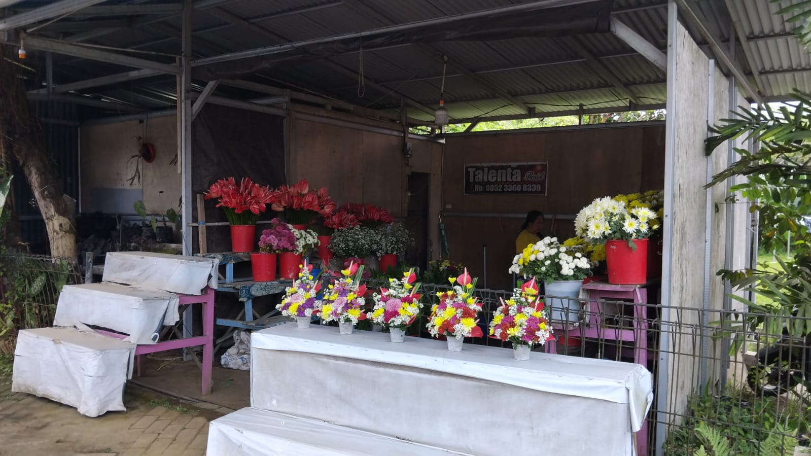

Tentang Kami
Kios Bunga Talenta adalah usaha florist lokal yang berlokasi di Kota Tomohon, kota bunga terbaik di Sulawesi Utara. Kami menyediakan berbagai rangkaian bunga segar untuk kebutuhan personal maupun acara seremonial.